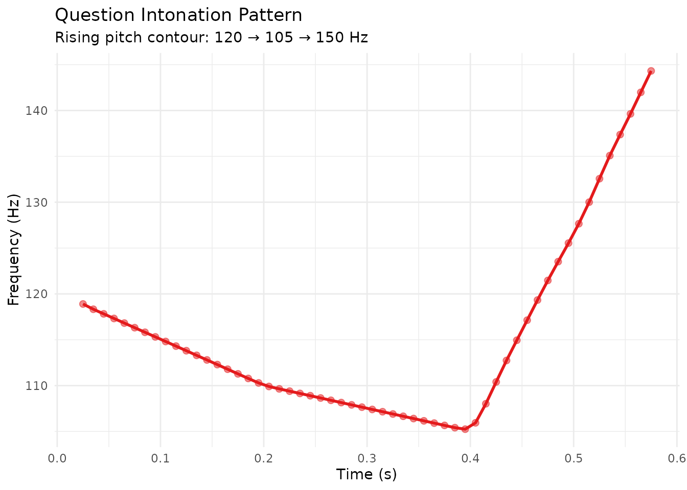
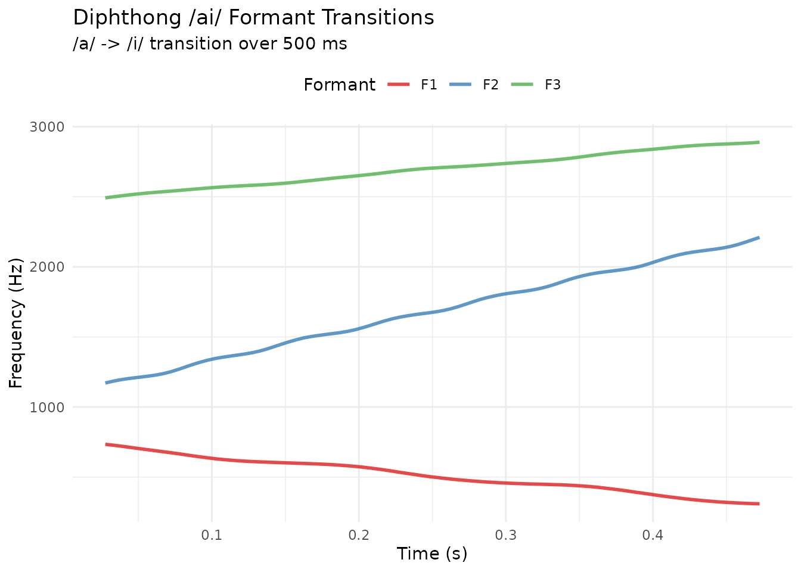

Speech Synthesis with KlattGrid
Source:vignettes/speech-synthesis-klattgrid.Rmd
speech-synthesis-klattgrid.RmdIntroduction
KlattGrid is pladdrr’s implementation of the Klatt cascade/parallel formant synthesizer, for generating synthetic speech from parametric descriptions. Unlike recording or playing back audio, KlattGrid creates speech from parameters by specifying:
- Pitch contours (fundamental frequency)
- Formant frequencies (F1, F2, F3, …)
- Formant bandwidths (spectral width)
- Voicing amplitude (phonation intensity)
This approach is used for:
- Voice manipulation research
- Perceptual experiments with controlled stimuli
- Teaching phonetics concepts
- Speech resynthesis with modified parameters
Why Speech Synthesis?
Research Applications
KlattGrid enables experiments that natural speech cannot provide:
- Independent control - Change F1 independently of F2, not possible in human speech
- Parametric variation - Generate continua (e.g., /i/ to /u/ in 10 steps)
- Non-natural voices - Male formants + female pitch
- Reproducibility - Exact same stimulus across sessions
The Klatt Synthesizer
Dennis Klatt’s 1980 formant synthesizer is a cascade/parallel model of parametric speech synthesis. It models the vocal tract as a cascade of resonant filters (formants) excited by a periodic source (voicing) or noise.
pladdrr provides direct R access to Praat’s KlattGrid implementation.
Basic Usage
Recommended: Pre-configured Vowels
The safest way to create a KlattGrid is with
klattgrid_create_from_vowel():
# Synthesize /a/ vowel (low central)
kg <- klattgrid_create_from_vowel(
duration = 0.5, # 500 ms
f0start = 120, # Pitch: 120 Hz (adult male)
f1 = 800, b1 = 80, # First formant + bandwidth
f2 = 1200, b2 = 120, # Second formant + bandwidth
f3 = 2500, b3 = 150 # Third formant + bandwidth
)
# Synthesize to audio
sound <- kg$to_sound()
cat("Created sound:\n")
#> Created sound:
cat(" Duration:", sound$get_duration(), "s\n")
#> Duration: 0.5 s
cat(" Samples:", sound$get_number_of_samples(), "\n")
#> Samples: 22050
cat(" Sampling rate:", sound$get_sampling_frequency(), "Hz\n")
#> Sampling rate: 44100 HzAvoid Empty Grids
Do not use the empty constructor for synthesis:
# THIS WILL ERROR -- the error below is the point of the example.
# Praat's own error text uses typographic quotes, which can break the
# CRAN vignette-rebuild pass under a non-UTF-8 locale, so it's caught and
# re-printed here as plain ASCII rather than let through raw.
kg <- KlattGrid(tmin = 0, tmax = 1, numberOfFormants = 5)
tryCatch(
kg$to_sound(),
error = function(e) cat("Error: uninitialized tiers (pitch, voicing, formants)\n")
)
#> Error: uninitialized tiers (pitch, voicing, formants)Why? Empty grids need complete initialization: - Pitch tier (fundamental frequency) - Voicing amplitude tier (phonation) - All formant frequency tiers (F1, F2, F3, …) - All formant bandwidth tiers (B1, B2, B3, …)
Always use klattgrid_create_from_vowel() or
klattgrid_create_example() instead.
Vowel Synthesis
The Vowel Triangle
The three corner vowels (/i/, /a/, /u/) define the vowel space:
# /i/ - high front vowel (English "beet")
kg_i <- klattgrid_create_from_vowel(
duration = 0.3, f0start = 200,
f1 = 280, b1 = 50,
f2 = 2250, b2 = 100,
f3 = 2890, b3 = 120
)
# /a/ - low central vowel (English "father")
kg_a <- klattgrid_create_from_vowel(
duration = 0.3, f0start = 200,
f1 = 730, b1 = 80,
f2 = 1090, b2 = 120,
f3 = 2440, b3 = 140
)
# /u/ - high back vowel (English "boot")
kg_u <- klattgrid_create_from_vowel(
duration = 0.3, f0start = 200,
f1 = 310, b1 = 60,
f2 = 870, b2 = 90,
f3 = 2250, b3 = 140
)
# Synthesize all three
sound_i <- kg_i$to_sound()
sound_a <- kg_a$to_sound()
sound_u <- kg_u$to_sound()
cat("Vowel triangle synthesized:\n")
#> Vowel triangle synthesized:
cat(" /i/: F1=", 280, " F2=", 2250, " Hz (high front)\n", sep="")
#> /i/: F1=280 F2=2250 Hz (high front)
cat(" /a/: F1=", 730, " F2=", 1090, " Hz (low central)\n", sep="")
#> /a/: F1=730 F2=1090 Hz (low central)
cat(" /u/: F1=", 310, " F2=", 870, " Hz (high back)\n", sep="")
#> /u/: F1=310 F2=870 Hz (high back)Formant Values for Common Vowels
Adult male (~120 Hz pitch):
| Vowel | IPA | F1 (Hz) | F2 (Hz) | F3 (Hz) | Example Word |
|---|---|---|---|---|---|
| beet | /i/ | 280 | 2250 | 2890 | “beet” |
| bit | /ih/ | 400 | 2000 | 2550 | “bit” |
| bait | /e/ | 550 | 1770 | 2490 | “bait” |
| bet | /eh/ | 660 | 1720 | 2410 | “bet” |
| bat | /ae/ | 860 | 1760 | 2390 | “bat” |
| father | /a/ | 730 | 1090 | 2440 | “father” |
| bought | /ao/ | 570 | 840 | 2410 | “bought” |
| boat | /o/ | 500 | 700 | 2410 | “boat” |
| book | /uh/ | 440 | 1020 | 2240 | “book” |
| boot | /u/ | 310 | 870 | 2250 | “boot” |
Voice Types
Different speakers require different formant and pitch values:
# Male voice (low pitch, lower formants)
kg_male <- klattgrid_create_from_vowel(
duration = 0.5, f0start = 100,
f1 = 750, b1 = 80,
f2 = 1100, b2 = 120,
f3 = 2400, b3 = 150
)
# Female voice (higher pitch, higher formants)
kg_female <- klattgrid_create_from_vowel(
duration = 0.5, f0start = 220,
f1 = 850, b1 = 70,
f2 = 1300, b2 = 110,
f3 = 2800, b3 = 140
)
# Child voice (very high pitch)
kg_child <- klattgrid_create_from_vowel(
duration = 0.4, f0start = 300,
f1 = 900, b1 = 60,
f2 = 1400, b2 = 100,
f3 = 3000, b3 = 130
)
cat("Pitch ranges:\n")
#> Pitch ranges:
cat(" Male: 80-180 Hz (typical ~100-120 Hz)\n")
#> Male: 80-180 Hz (typical ~100-120 Hz)
cat(" Female: 160-250 Hz (typical ~200-220 Hz)\n")
#> Female: 160-250 Hz (typical ~200-220 Hz)
cat(" Child: 250-400 Hz (typical ~300 Hz)\n")
#> Child: 250-400 Hz (typical ~300 Hz)Pitch Contours
Dynamic Intonation
Add pitch points to create dynamic intonation patterns:
# Start with base vowel
kg <- klattgrid_create_from_vowel(
duration = 0.6, f0start = 120,
f1 = 500, b1 = 50,
f2 = 1500, b2 = 100,
f3 = 2500, b3 = 150
)
# Add rising intonation (question)
kg$add_pitch_point(0.2, 110) # Slight dip
kg$add_pitch_point(0.4, 105) # Lower
kg$add_pitch_point(0.6, 150) # Rise at end
sound <- kg$to_sound()
pitch <- sound$to_pitch()
# Visualize pitch contour
df <- as.data.frame(pitch)
df <- df[!is.na(df$frequency), ]
ggplot(df, aes(time, frequency)) +
geom_line(color = "#E41A1C", linewidth = 1) +
geom_point(color = "#E41A1C", size = 2, alpha = 0.5) +
labs(
title = "Question Intonation Pattern",
subtitle = "Rising pitch contour: 120 -> 105 -> 150 Hz",
x = "Time (s)",
y = "Frequency (Hz)"
) +
theme_minimal()
Common Pitch Patterns
# Flat pitch (citation form)
kg_flat <- klattgrid_create_from_vowel(
duration = 0.5, f0start = 120,
f1 = 500, b1 = 50, f2 = 1500, b2 = 100, f3 = 2500, b3 = 150
)
# No additional points needed
# Falling pitch (statement)
kg_fall <- klattgrid_create_from_vowel(
duration = 0.5, f0start = 150,
f1 = 500, b1 = 50, f2 = 1500, b2 = 100, f3 = 2500, b3 = 150
)
kg_fall$add_pitch_point(0.5, 100) # Fall from 150 to 100 Hz
# Rising pitch (question)
kg_rise <- klattgrid_create_from_vowel(
duration = 0.5, f0start = 100,
f1 = 500, b1 = 50, f2 = 1500, b2 = 100, f3 = 2500, b3 = 150
)
kg_rise$add_pitch_point(0.5, 180) # Rise from 100 to 180 HzFormant Transitions
Diphthongs
Create smooth vowel-to-vowel transitions:
# /ai/ diphthong: /a/ -> /i/ (as in "buy")
kg <- klattgrid_create_from_vowel(
duration = 0.5, f0start = 150,
f1 = 730, b1 = 80, # Start: /a/
f2 = 1090, b2 = 120,
f3 = 2440, b3 = 140
)
# Transition to /i/ at end (formantType 1 = oral formants)
kg$add_formant_point(1, 1, 0.5, 280) # F1: 730 -> 280 Hz
kg$add_formant_point(1, 2, 0.5, 2250) # F2: 1090 -> 2250 Hz
kg$add_formant_point(1, 3, 0.5, 2890) # F3: 2440 -> 2890 Hz
sound <- kg$to_sound()
# Extract formants to visualize transition
frm_result <- sound$to_formant_burg(max_frequency = 5500)
df <- as.data.frame(frm_result)
df <- df[df$formant %in% 1:3, ]
names(df)[names(df) == "formant"] <- "formant_number"
ggplot(df, aes(time, frequency, color = factor(formant_number))) +
geom_line(linewidth = 1, alpha = 0.8) +
scale_color_manual(
values = c("1" = "#E41A1C", "2" = "#377EB8", "3" = "#4DAF4A"),
labels = c("F1", "F2", "F3")
) +
labs(
title = "Diphthong /ai/ Formant Transitions",
subtitle = "/a/ -> /i/ transition over 500 ms",
x = "Time (s)",
y = "Frequency (Hz)",
color = "Formant"
) +
theme_minimal() +
theme(legend.position = "top")
Vowel Continuum
Generate perceptual continua for experiments:
# Create /i/ to /u/ continuum (10 steps)
f1_seq <- seq(280, 310, length.out = 10) # F1: 280 (/i/) -> 310 (/u/)
f2_seq <- seq(2250, 870, length.out = 10) # F2: 2250 -> 870
vowel_continuum <- lapply(1:10, function(i) {
kg <- klattgrid_create_from_vowel(
duration = 0.3, f0start = 200,
f1 = f1_seq[i], b1 = 50,
f2 = f2_seq[i], b2 = 100,
f3 = 2500, b3 = 150
)
kg$to_sound()
})
# Save each step
for (i in 1:10) {
vowel_continuum[[i]]$save(file.path(tempdir(), sprintf("continuum_%02d.wav", i)), "WAV")
}Visualizing Synthesis
Spectrogram of Synthetic Vowel
# Synthesize /a/ vowel
kg <- klattgrid_create_from_vowel(
duration = 0.5, f0start = 120,
f1 = 730, b1 = 80,
f2 = 1090, b2 = 120,
f3 = 2440, b3 = 140
)
sound <- kg$to_sound()
# Create spectrogram
spec <- sound$to_spectrogram(
window_length = 0.005,
max_frequency = 5000
)
# Extract formants for overlay
frm_result <- sound$to_formant_burg(max_frequency = 5500)
formant_df <- as.data.frame(frm_result)
formant_df <- formant_df[formant_df$formant %in% 1:3, ]
formant_df$formant_num <- formant_df$formant
# Plot
autoplot(spec) +
geom_line(
data = formant_df,
aes(time, frequency, color = factor(formant_num)),
linewidth = 1.5, alpha = 0.8, inherit.aes = FALSE
) +
scale_color_manual(
values = c("1" = "red", "2" = "yellow", "3" = "white"),
labels = c("F1", "F2", "F3")
) +
labs(
title = "Synthetic /a/ Vowel Spectrogram",
subtitle = "F1=730, F2=1090, F3=2440 Hz (male voice, 120 Hz pitch)",
color = "Formant"
) +
theme(legend.position = "right")Comparing Real vs Synthetic
# Load real speech
sound_real <- Sound(system.file("extdata", "test.wav", package = "pladdrr"))
# Extract mean formants from real speech
formant_real <- sound_real$to_formant_burg()
df_real <- as.data.frame(formant_real)
f1_mean <- mean(df_real$frequency[df_real$formant == 1], na.rm = TRUE)
f2_mean <- mean(df_real$frequency[df_real$formant == 2], na.rm = TRUE)
f3_mean <- mean(df_real$frequency[df_real$formant == 3], na.rm = TRUE)
cat("Extracted formants from real speech:\n")
#> Extracted formants from real speech:
cat(sprintf(" F1: %.0f Hz\n", f1_mean))
#> F1: 421 Hz
cat(sprintf(" F2: %.0f Hz\n", f2_mean))
#> F2: 465 Hz
cat(sprintf(" F3: %.0f Hz\n", f3_mean))
#> F3: 3080 Hz
# Resynthesize with extracted formants
kg_synth <- klattgrid_create_from_vowel(
duration = min(sound_real$get_duration(), 1.0),
f0start = 120,
f1 = f1_mean, b1 = 80,
f2 = f2_mean, b2 = 120,
f3 = f3_mean, b3 = 150
)
sound_synth <- kg_synth$to_sound()
# Compare spectrograms side-by-side
spec_real <- sound_real$to_spectrogram(max_frequency = 5000)
spec_synth <- sound_synth$to_spectrogram(max_frequency = 5000)
cat("\nSynthetic sound matches real speech formant averages\n")
#>
#> Synthetic sound matches real speech formant averagesAdvanced Features
Voice Quality Control
Manipulate voicing amplitude for breathiness or creaky voice:
kg <- klattgrid_create_from_vowel(
duration = 0.5, f0start = 120,
f1 = 800, b1 = 80, f2 = 1200, b2 = 120, f3 = 2500, b3 = 150
)
# Add breathiness (fade voicing)
kg$add_voicing_amplitude_point(0.0, 60) # Start normal
kg$add_voicing_amplitude_point(0.5, 30) # End breathy
sound <- kg$to_sound()Complex Synthesis Example
Use the pre-configured example for complex synthesis:
# Pre-configured grid with multiple tiers
kg_complex <- klattgrid_create_example()
# Synthesize full signal
sound_complex <- kg_complex$to_sound()
cat("Complex KlattGrid example:\n")
#> Complex KlattGrid example:
cat(" Duration:", sound_complex$get_duration(), "s\n")
#> Duration: 6.88 s
cat(" Uses multiple pitch points, formant tiers, and amplitude control\n")
#> Uses multiple pitch points, formant tiers, and amplitude controlAnalysis -> Synthesis Workflow
Complete Pipeline
# 1. Load real speech
sound_orig <- Sound(system.file("extdata", "test.wav", package = "pladdrr"))
# 2. Extract formants (using FormantPath for robustness)
fp <- sound_orig$to_formant_path(num_steps_up_down = 2L)
frm_result <- fp$extract_formant()
# 3. Get mean formant values
df <- as.data.frame(frm_result)
f1_mean <- mean(df$frequency[df$formant == 1], na.rm = TRUE)
f2_mean <- mean(df$frequency[df$formant == 2], na.rm = TRUE)
f3_mean <- mean(df$frequency[df$formant == 3], na.rm = TRUE)
# 4. Extract pitch
pitch <- sound_orig$to_pitch()
f0_mean <- mean(as.data.frame(pitch)$frequency, na.rm = TRUE)
cat("Extracted parameters:\n")
#> Extracted parameters:
cat(sprintf(" F0: %.0f Hz\n", f0_mean))
#> F0: 440 Hz
cat(sprintf(" F1: %.0f Hz\n", f1_mean))
#> F1: 421 Hz
cat(sprintf(" F2: %.0f Hz\n", f2_mean))
#> F2: 465 Hz
cat(sprintf(" F3: %.0f Hz\n", f3_mean))
#> F3: 3080 Hz
# 5. Resynthesize
kg_resynth <- klattgrid_create_from_vowel(
duration = min(sound_orig$get_duration(), 1.0),
f0start = f0_mean,
f1 = f1_mean, b1 = 80,
f2 = f2_mean, b2 = 120,
f3 = f3_mean, b3 = 150
)
sound_resynth <- kg_resynth$to_sound()
cat("\nResynthesis complete - compare original vs synthetic\n")
#>
#> Resynthesis complete - compare original vs syntheticUse Cases
1. Perceptual Experiments
Control stimuli precisely for categorical perception studies:
# Voice onset time (VOT) continuum simulation
# Generate /ba/ to /pa/ continuum by manipulating voice onset
vot_values <- seq(0, 60, by = 10) # 0-60 ms VOT
stimuli <- lapply(vot_values, function(vot_ms) {
# Voicing delay = VOT
kg <- klattgrid_create_from_vowel(
duration = 0.5, f0start = 120,
f1 = 730, b1 = 80, f2 = 1090, b2 = 120, f3 = 2440, b3 = 140
)
# Manipulate voicing onset (simplified)
if (vot_ms > 0) {
kg$add_voicing_amplitude_point(0, 0)
kg$add_voicing_amplitude_point(vot_ms / 1000, 60)
}
kg$to_sound()
})2. Voice Morphing
Create intermediate voices between two speakers:
# Male voice parameters
f1_male <- 730
f2_male <- 1090
f0_male <- 100
# Female voice parameters
f1_female <- 850
f2_female <- 1300
f0_female <- 220
# Morph continuum (10 steps)
morph_steps <- seq(0, 1, length.out = 10)
morphed_voices <- lapply(morph_steps, function(alpha) {
# Linear interpolation
f1 <- f1_male + alpha * (f1_female - f1_male)
f2 <- f2_male + alpha * (f2_female - f2_male)
f0 <- f0_male + alpha * (f0_female - f0_male)
kg <- klattgrid_create_from_vowel(
duration = 0.5, f0start = f0,
f1 = f1, b1 = 80, f2 = f2, b2 = 120, f3 = 2500, b3 = 150
)
kg$to_sound()
})3. Teaching Phonetics
Demonstrate formant-vowel relationships interactively:
# Function to synthesize any vowel from F1/F2
synthesize_vowel <- function(f1, f2, label = "") {
kg <- klattgrid_create_from_vowel(
duration = 0.5, f0start = 120,
f1 = f1, b1 = 80, f2 = f2, b2 = 120, f3 = 2500, b3 = 150
)
sound <- kg$to_sound()
filename <- file.path(tempdir(), sprintf("vowel_%s_F1%d_F2%d.wav", label, f1, f2))
sound$save(filename, "WAV")
cat(sprintf("Created %s: F1=%d, F2=%d Hz\n", label, f1, f2))
}
# Generate examples
synthesize_vowel(280, 2250, "i")
#> Created i: F1=280, F2=2250 Hz
synthesize_vowel(730, 1090, "a")
#> Created a: F1=730, F2=1090 Hz
synthesize_vowel(310, 870, "u")
#> Created u: F1=310, F2=870 HzKnown Limitations
1. Empty Grid Errors on Synthesis
Issue: Direct synthesis from an empty
KlattGrid() errors
("Pitch tier should not be empty.")
Workaround: Always use
klattgrid_create_from_vowel() or
klattgrid_create_example()
Example of safe usage:
# safe
kg <- klattgrid_create_from_vowel(
duration = 0.5, f0start = 120,
f1 = 800, b1 = 80, f2 = 1200, b2 = 120, f3 = 2500, b3 = 150
)
# safe
kg <- klattgrid_create_example()
# unsafe - errors, uninitialized tiers
kg <- KlattGrid(tmin = 0, tmax = 1, numberOfFormants = 5)
tryCatch(
kg$to_sound(),
error = function(e) cat("Error: uninitialized tiers (pitch, voicing, formants)\n")
)
#> Error: uninitialized tiers (pitch, voicing, formants)Best Practices
Do
-
Always use
klattgrid_create_from_vowel()for vowel synthesis - Start with known formant values from the reference table
- Adjust formants gradually (+/-50-100 Hz steps)
- Keep bandwidths proportional: B1 < B2 < B3 (typically 50-80-120 Hz)
- Match pitch to speaker type: male ~100-120 Hz, female ~200-220 Hz
- Test with short durations (0.3-0.5s) before scaling up
- Export to WAV for analysis in other tools
Don’t
-
Don’t use empty
KlattGrid()constructor (errors on synthesis) - Don’t violate F1 < F2 < F3 (unnatural synthesis)
- Don’t use zero bandwidth (causes artifacts)
- Don’t expect consonant synthesis (formants only, no articulation model)
- Don’t modify existing grids (create new ones instead)
Troubleshooting
Error on to_sound()
Cause: Incomplete grid initialization
Solution: Use
klattgrid_create_from_vowel() instead of empty grid
Comparison with Other Tools
pladdrr vs Praat GUI
| Feature | pladdrr KlattGrid | Praat GUI |
|---|---|---|
| Vowel synthesis | createFromVowel() |
Manual setup |
| Pitch contours | add_pitch_point() |
PitchTier editor |
| Batch synthesis | R loops | Manual, one at a time |
| Parametric experiments | Scriptable continua | Repeated manual steps |
| Visualization | ggplot2 | Built-in |
Summary
KlattGrid is used for: - Perceptual experiments requiring controlled stimuli - Voice manipulation research - Teaching phonetic concepts - Speech resynthesis with modified parameters
Key functions: -
klattgrid_create_from_vowel() - Safe vowel synthesis -
add_pitch_point() - Dynamic intonation -
add_formant_point() - Formant transitions -
to_sound() - Generate audio
Typical workflow: 1. Define formant parameters
(F1/F2/F3, B1/B2/B3) 2. Set pitch contour (f0start + optional points) 3.
Create grid with createFromVowel() 4. Synthesize with
to_sound() 5. Analyze or export
Further Reading
- Klatt, D. H. (1980). “Software for a cascade/parallel formant synthesizer”. JASA, 67(3), 971-995.
- Praat manual: KlattGrid
- pladdrr documentation:
?klattgrid_create_from_vowel - See also:
vignette("formantpath-robust-tracking")for formant extraction
Session Info
sessionInfo()
#> R version 4.6.1 (2026-06-24)
#> Platform: x86_64-pc-linux-gnu
#> Running under: Ubuntu 24.04.4 LTS
#>
#> Matrix products: default
#> BLAS: /usr/lib/x86_64-linux-gnu/openblas-pthread/libblas.so.3
#> LAPACK: /usr/lib/x86_64-linux-gnu/openblas-pthread/libopenblasp-r0.3.26.so; LAPACK version 3.12.0
#>
#> locale:
#> [1] LC_CTYPE=C.UTF-8 LC_NUMERIC=C LC_TIME=C.UTF-8
#> [4] LC_COLLATE=C.UTF-8 LC_MONETARY=C.UTF-8 LC_MESSAGES=C.UTF-8
#> [7] LC_PAPER=C.UTF-8 LC_NAME=C LC_ADDRESS=C
#> [10] LC_TELEPHONE=C LC_MEASUREMENT=C.UTF-8 LC_IDENTIFICATION=C
#>
#> time zone: UTC
#> tzcode source: system (glibc)
#>
#> attached base packages:
#> [1] stats graphics grDevices utils datasets methods base
#>
#> other attached packages:
#> [1] ggplot2_4.0.3 pladdrr_5.0.1
#>
#> loaded via a namespace (and not attached):
#> [1] gtable_0.3.6 jsonlite_2.0.0 dplyr_1.2.1 compiler_4.6.1
#> [5] tidyselect_1.2.1 Rcpp_1.1.2 jquerylib_0.1.4 systemfonts_1.3.2
#> [9] scales_1.4.0 textshaping_1.0.5 yaml_2.3.12 fastmap_1.2.0
#> [13] R6_2.6.1 labeling_0.4.3 generics_0.1.4 knitr_1.51
#> [17] tibble_3.3.1 desc_1.4.3 bslib_0.12.0 pillar_1.11.1
#> [21] RColorBrewer_1.1-3 rlang_1.3.0 cachem_1.1.0 xfun_0.60
#> [25] fs_2.1.0 sass_0.4.10 S7_0.2.2 otel_0.2.0
#> [29] cli_3.6.6 pkgdown_2.2.1 withr_3.0.3 magrittr_2.0.5
#> [33] digest_0.6.39 grid_4.6.1 lifecycle_1.0.5 vctrs_0.7.3
#> [37] evaluate_1.0.5 glue_1.8.1 data.table_1.18.4 farver_2.1.2
#> [41] codetools_0.2-20 ragg_1.5.2 rmarkdown_2.31 tools_4.6.1
#> [45] pkgconfig_2.0.3 htmltools_0.5.9